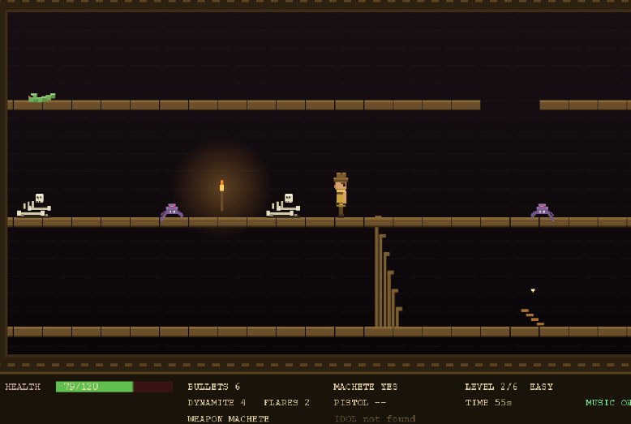

AZTEC — a free browser remake of the 1982 Datamost classic
Welcome to AZTEC, Michael Fenton's 2026 browser remake of the 1982 Datamost adventure for the Apple II. Before you descend, take a moment here: see the game, learn the controls, hear the original soundtrack, and read a few hints. Then launch it and find the jade idol — if the temple lets you leave. It runs free in any modern browser, with no download and no install, and it is best played with sound on.

▶ Play AZTEC now — free in your browser (best with sound on)
The story
Deep in the jungle stands a forgotten temple, and somewhere in its lowest vault rests the jade idol of Quetzalcoatl. Professor von Forster went in to find it and never came back — you may meet what is left of him in the rubble. Heed the Explorer's Warning, then climb down through the dark. Every temple is procedurally generated, so no two descents are the same: floors, stairs, traps, treasure and monsters are laid out fresh each run.
This Special Edition adds explorable hidden alcoves off dead-end stairs, animated closing-wall and descending-ceiling traps, a rising-water trap, giant breakable webs, a shareable seeded temple code, and a time-pressure score — the idol's value slowly tarnishes the longer you linger. Light is everything: your torch and limited flares reveal what waits in the black, and dynamite is your way out when a trap closes in. Find the idol, then race all the way back to the temple mouth to escape alive.
Screen and keyboard controls
AZTEC is played with the keyboard. Here is everything you need before you start:
| Key | Action |
|---|---|
| ← → (Left / Right arrows) | Walk left or right. Hold Shift to run faster. |
| ↑ ↓ (Up / Down arrows) | Climb stairs up or down. At the surface, press ↑ at the exit to escape. |
| Z | Jump across small gaps. Run while jumping for large gaps. |
| Spacebar | Attack with your selected weapon (fists, machete, or pistol). |
| C | Combat — cycle your weapon: fists → machete → pistol. |
| F | Drop a flare for light. Hold Shift + F to lob it further ahead. |
| D | Dynamite — blast through trap walls (and floors) to escape. |
| O | Open / search a chest or a rubble or bones pile (dig three times). |
| T | Torch pick up / drop. |
| M | Music on / off. |
| R | Restart the game. |
| Esc | Pause. |
Player hints
- Light is life. Grab a torch to reveal a small circle; flares light a wider area but are limited, so drop them where you most need to read the room for traps and monsters.
- Search everything. Rubble and bones piles take three digs to clear and can hide bullets, dynamite, flares or health — but on Normal and Hard some are booby-trapped, so weigh the risk.
- Dynamite is your escape tool. When the walls close in, the ceiling drops, or the water rises, blast your way out before it is too late.
- Mind the priests. A temple priest can steal your machete — but you can find another inside a chest, so don't panic.
- The idol is deepest. It waits on the lowest level, hidden in a chest, a pile, or a side alcove. Grab it, then climb all the way back to the temple mouth to win.
- Choose your difficulty. On Easy, dying restarts the whole run (so it never gets too forgiving); on Normal and Hard you respawn at the level entrance.
- Beat the clock. The idol's value tarnishes the longer you take — explore boldly, but don't dawdle if you're chasing a high score.
- Share a temple. Enter a seed code to replay or share the exact same temple layout with a friend.
The original soundtrack
AZTEC ships with an original score composed for the game. The title theme plays on the start screen, and the level tracks — including the eerie Explorer's Warning suite — are assigned as you descend. Have a listen before you play (or load your own music folder inside the game):
The music is an AI partnership too. I wrote the lyrics, but I can’t sing, write music, or play an instrument, so without an AI collaborator to help shape and revise these pieces, AZTEC would have stayed a half-finished, silent game — and that frustration would very likely have made me abandon it. The direction and the choices stayed mine; the AI filled a skill gap I couldn’t, which is exactly the point of the reflection further down this page.
Title theme
Descent — level tracks
- Low Loop (early descent)
- Explorer's Warning (v2)
- Explorer's Warning (v3)
- Explorer's Warning (v4)
- Explorer's Warning (v5)
- Explorer's Warning (v6)
- Exciting Loop (deep levels)
- Dramatic Loop (the depths)
Watch it in action
Prefer to look before you leap? Here is five minutes of gameplay on the Easy setting with the bundled soundtrack.
Ready? Descend the temple
You've seen the temple, learned the keys, and heard the score. The jade idol is waiting in the dark.
▶ Play AZTEC — the 2026 web remake, free in your browser (best played with sound on)
AI in education
AZTEC is also a small argument about how to use AI well. While rebuilding the game as a teaching example, Michael Fenton wrote this reflection on AI as a creative partner in education — first shared on LinkedIn:
AI brings the gift of time, something learners and educators never have enough of.
As a teaching example, I’ve just rebuilt the 1982 Apple II game Aztec to run free in any browser.
For such a task, some say “Ban AI”, others say “Let AI do the coding”. Two loud messages about AI in education right now… I don’t accept either.
I brought the concept, the baseline code, and the design judgement; the refinements an AI would never think to ask for. Making the Easy mode less forgiving so players actually feel stakes. A side-room that caves in for drama but hands out no reward. Fixing a hazard so it floats exactly like the original’s quirky 1982 bug. That’s taste, intent, and the why, things I’m not sure an AI can imagine on its own.
So what did my AI partner bring? Speed and rigour where humans are slow and fallible: running hundreds of procedurally generated layouts to prove every one is solvable, and unit-testing edge cases I’d never have the patience to check by hand.
The big gain for my teaching and learners is because the testing is fast and reliable, we get time back… time to try alternatives we would otherwise never have explored. In my game this was time to add a second trap type. Hidden rooms. A whole “special edition.”
That’s the real gift of an AI partner: not the removal of thinking, but the return of time. Having the headspace to indulge in creativity, be curious, imagine crazy alternatives.
So no, I won’t ban AI use. It is not a binary choice. Learning to code still matters, because someone has to set the direction, judge the output, and imagine what the machine can’t.
AZTEC is archived as a citable research output on Zenodo, with a permanent DOI: doi.org/10.5281/zenodo.21023863.